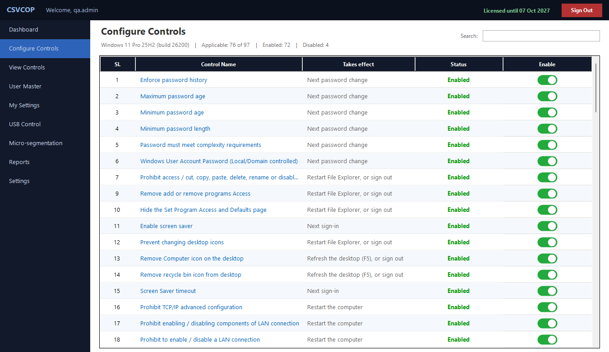
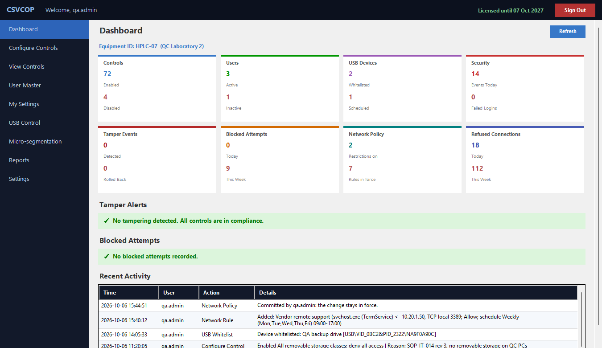
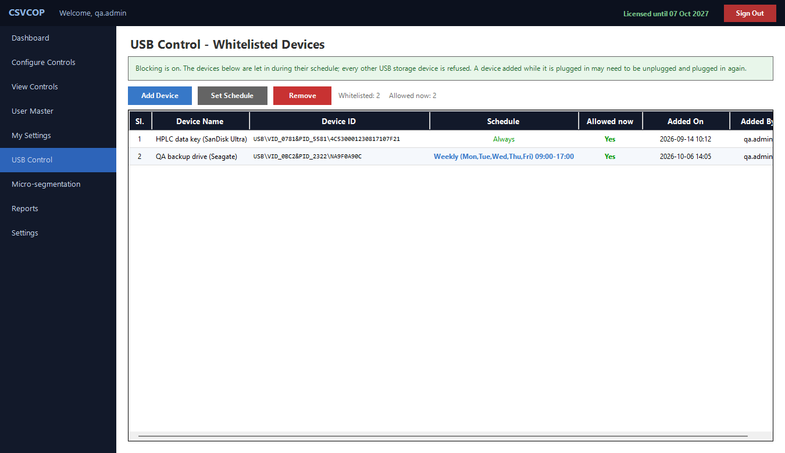
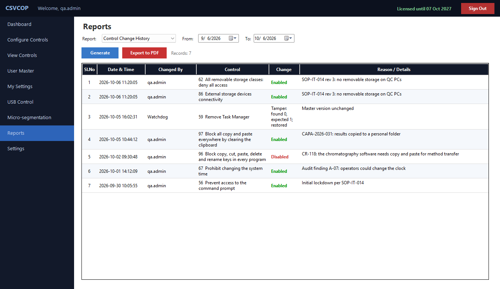
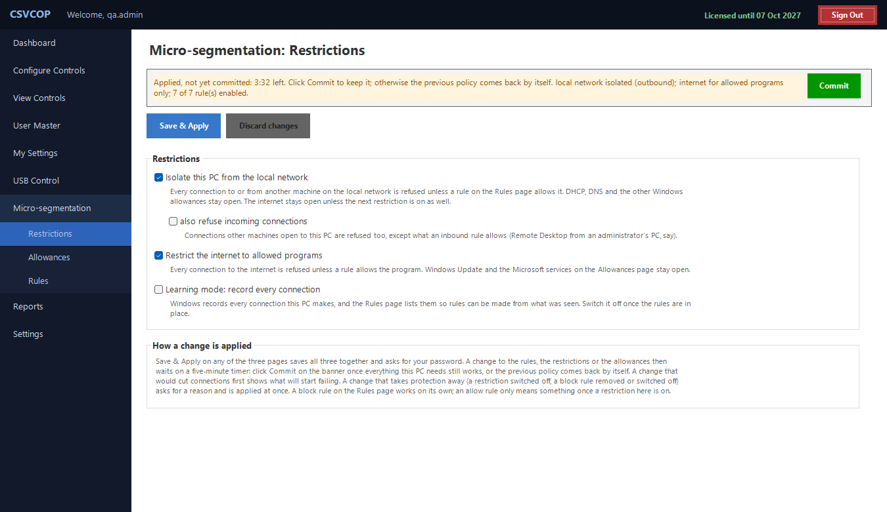
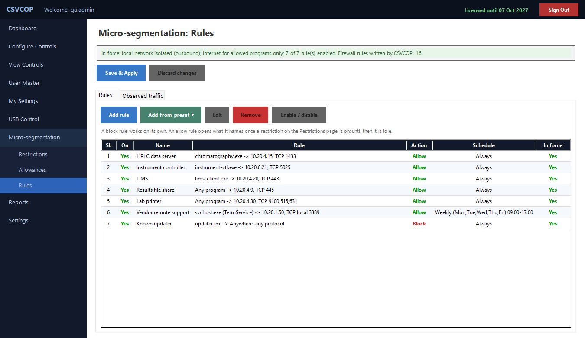
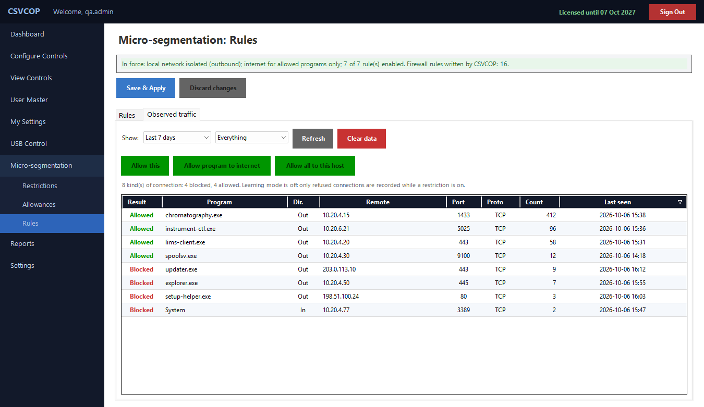
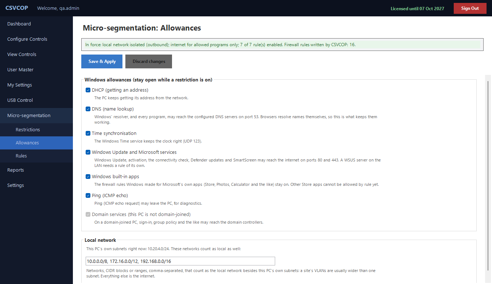
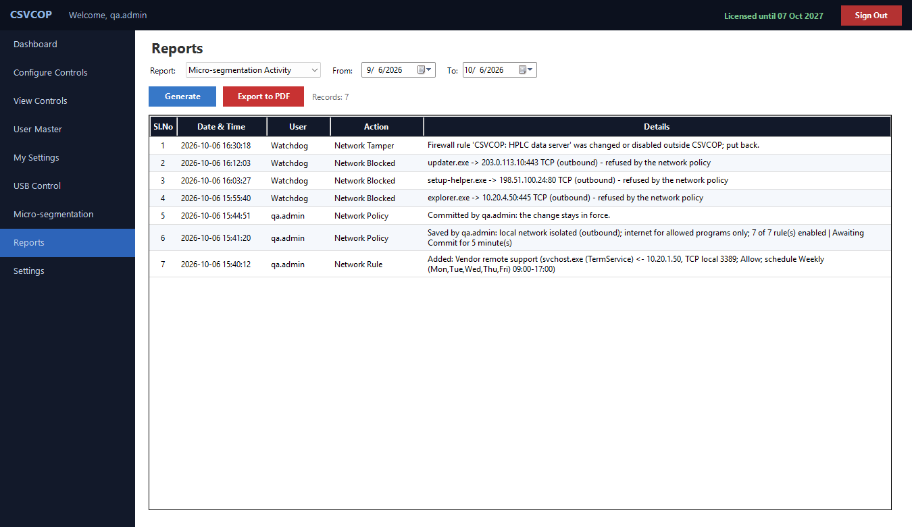

Home/Features
Everything it does. Module by module.
The essentials of each module, the real screens, and the full list of controls.
21 CFR Part 11 Controls
Lock the workstation down, and keep it that way.
Numbered Windows controls
Passwords, Start menu, Run, command prompt, drives, network settings, time and shutdown — each in plain words, side effects included.
Self-healing
Any change put back within 30 seconds, as a logged tamper event.
Runs as SYSTEM
Starts before sign-in. Windows restarts it if stopped.
Session guard
Copy, paste, delete, rename and drag refused; deletions undone.
USB by device
Deny all, deny writing, or allow the exact devices.
Accountable admins
Password policy, rate-limited sign-in, 20-minute idle sign-out.
Seven reports
A click from PDF, with your logo and the Equipment ID.




All 97 controls
Numbered as in the application, so an auditor’s checklist can cite them.
Passwords & accounts6
- 1Enforce password history
- 2Maximum password age
- 3Minimum password age
- 4Minimum password length
- 5Password must meet complexity requirements
- 6Windows user account password (local / domain controlled)
Lockout, sign-in & auditing6
- 68Interactive logon: do not display last user name
- 79Account lockout duration
- 80Account lockout threshold
- 81Reset account lockout counter after
- 82Audit account logon events (success, failure)
- 83Audit policy change (success, failure)
Start menu, taskbar & history35
- 20Clear history of recently opened documents on exit
- 21Clear the recent programs list for new users
- 22Remove and prevent access to the Shut down, Restart, Sleep and Hibernate commands
- 23Remove common program groups from Start menu
- 24Remove Favorites menu from Start menu
- 25Remove Search link from Start menu
- 26Remove frequent programs list from the Start menu
- 27Remove Games link from Start menu
- 28Remove Help menu from Start menu
- 29Remove All Programs list from the Start menu
- 30Remove Network Connections from Start menu
- 31Remove pinned programs list from the Start menu
- 32Do not keep history of recently opened documents
- 33Remove Recent items menu from Start menu
- 35Remove Default Programs link from the Start menu
- 36Remove Documents icon from Start menu
- 37Remove Music icon from Start menu
- 38Remove Pictures icon from Start menu
- 39Remove Search Computer link
- 40Do not search programs and Control Panel items
- 41Remove programs on Settings menu
- 42Prevent changes to Taskbar and Start menu settings
- 43Remove Homegroup link from Start menu
- 44Remove access to the context menus for the taskbar
- 45Hide the notification area
- 46Remove links and access to Windows Update
- 47Do not search the internet
- 48Remove Downloads link from Start menu
- 49Remove Recorded TV link from Start menu
- 50Remove Videos link from Start menu
- 51Remove the Action Center icon
- 52Turn off feature advertisement balloon notifications
- 53Lock all taskbar settings
- 54Prevent users from rearranging toolbars
- 55Remove pinned programs from the taskbar
Run, command prompt & system tools11
- 8Disable shortcut keys in the keyboard
- 9Remove Add or Remove Programs access
- 10Hide the Set Program Access and Defaults page
- 34Remove Run menu from Start menu
- 56Prevent access to the command prompt
- 57Don't run specified Windows applications
- 59Remove Task Manager
- 71Turn off Windows + X hotkeys
- 84Control Panel access
- 85Taskbar access
- 92Disable Registry Editor
Desktop & screen saver5
- 11Enable screen saver
- 12Prevent changing desktop icons
- 13Remove Computer icon on the desktop
- 14Remove Recycle Bin icon from desktop
- 15Screen saver timeout
File Explorer, search & drives12
- 7Prohibit access / cut, copy, paste, delete, rename or disable right-click
- 65Turn off display of recent search entries in the Explorer search box
- 66Turn off the display of snippets in Content view mode
- 69Remove “see more results / search everywhere” link
- 70Do not search for files
- 75Hide the Manage item on the Explorer context menu
- 76Remove Security tab
- 77Remove search button from Explorer
- 78Remove Explorer's default context menu
- 89Remove Map Network Drive and Disconnect Network Drive
- 90Hide drives in File Explorer
- 91Prevent access to drives in File Explorer
Removable storage & devices6
- 60Removable disks: deny read access
- 61Removable disks: deny write access
- 62All removable storage classes: deny all access
- 63Windows portable devices: deny read access
- 64Windows portable devices: deny write access
- 86External storage devices connectivity
Network5
- 16Prohibit TCP/IP advanced configuration
- 17Prohibit enabling / disabling components of a LAN connection
- 18Prohibit enabling / disabling a LAN connection
- 19Prohibit access to properties of components of a remote access connection
- 88Network access settings
Windows Update2
- 58Windows automatic updates
- 72Remove access to use all Windows Update features
Time, system rights & shutdown5
- 67Prohibit changing the system time
- 73Change the time zone
- 74Create a pagefile
- 87Date & time change
- 93Remove standard users' right to shut down the system
Session guard (the CSVCOP agent)4
- 94Block copy, cut, paste, delete and rename keys in File Explorer
- 95Block copying and moving files by dragging them
- 96Block copy, cut, paste, delete and rename keys in every program, and block rename by every route in File Explorer
- 97Block all copy and paste everywhere by clearing the clipboard (files and text)
Micro-segmentation
Decide which programs may talk to which machines, and record every refusal.
To commit a change
A tightening change is in force at once, and undoes itself unless committed. What will stop working is listed first.
Isolate the PC
From other PCs, shares and servers, except by rule.
Internet, by program
Only named programs reach the internet.
Learning mode
Every connection recorded first; one click makes a rule.
Rules and presets
Program, address, port, protocol; nine presets; schedules.
Windows keeps working
DHCP, DNS, time and Windows Update stay open.
Held, on record
Changes put back in 30 s; every refusal in two reports.





Licences for PCs that never go online
Machine key
A one-way hash of the hardware. It survives a Windows re-install.
Signed, machine-bound
RSA-2048. A key for another PC is refused.
Modules in the key
Each key names the modules its PC has.
30-day warning
Renew by pasting the new key over the old.
14 days of grace
Then the controls switch off; the settings are kept.
Clock-aware
A clock set back is reported and locks changes.
See both modules on your own workstation
Bring the checkpoint your auditor raised. We will show you the control, the rule and the evidence.